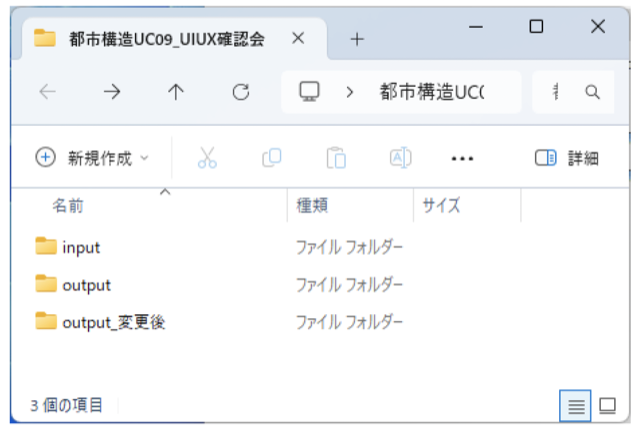
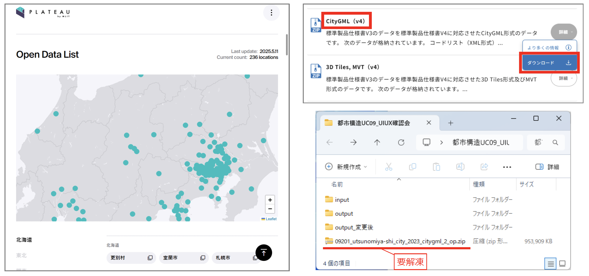
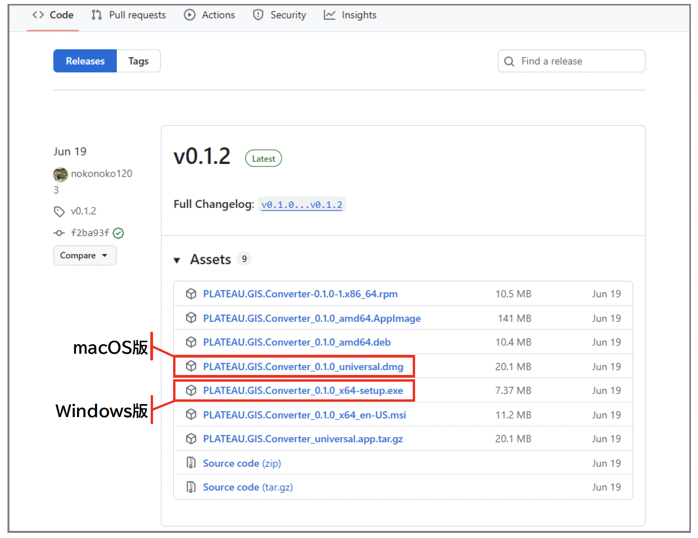
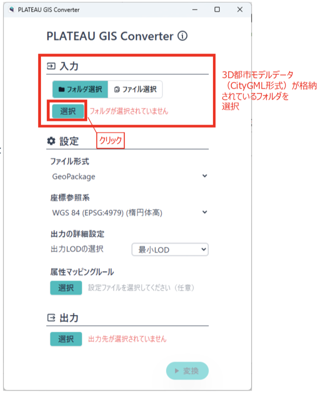
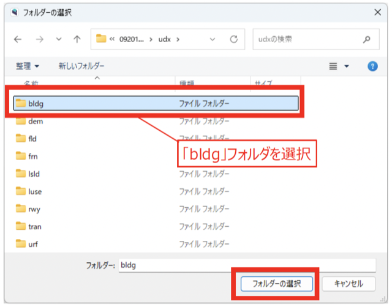
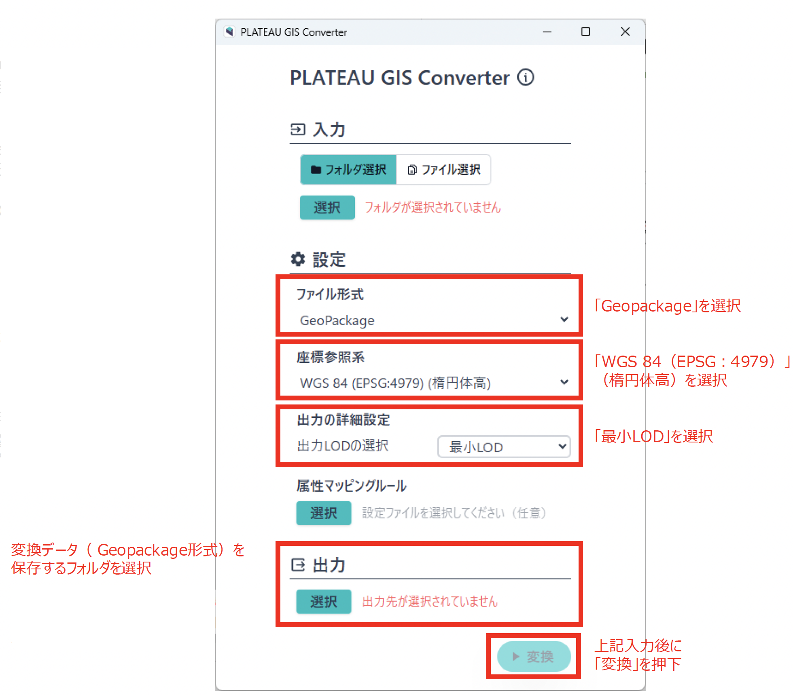

環境構築手順書
1 本書について
本書では、都市構造評価ツールの利用環境構築手順について記載しています。本ツールの構成や仕様の詳細については以下も参考にしてください。
2 動作環境
本システムの動作環境は以下のとおりです。
| 項目 | 最小動作環境 | 推奨動作環境 |
|---|---|---|
| OS | Windows 10 Pro 64ビット以上 | 同左 |
| CPU | Intel Core i5以上 | 同左 |
| GPU | インテル® UHD グラフィックス（CPU に内蔵） | 同左 |
| メモリ | 16GB以上 | 同左 |
| ストレージ | 256GB SSD ※1 | 同左 |
| ディスプレイ解像度 | 1024×768以上 | 同左 |
| ネットワーク | インターネット接続が必要 | 同左 |
※1 入手するインプットデータ等により必要な容量は異なります。データの保存に十分な容量をご用意ください。
3 インストール手順
3-1. QGISのインストール
こちら からQGIS（バージョン 3.34）をダウンロード、インストールします。
3-2. 本ツールプラグインインストール
3-2-1. プラグインのダウンロード
こちら から本ツールのプラグインをダウンロードします。
3-2-2. QGISを起動します。

3-2-3. メニューのプラグイン>プラグインの管理とインストールを開きます。

3-2-4. 「ZIPからインストール」画面を開きます。

3-2-5. 本プラグインのZIPファイルを選択し、「インストール」を実行します。

自身でソースファイルをダウンロードし、QGISのプラグインフォルダに展開することでもインストール可能です。
ソースファイルは
こちら
からダウンロード可能です。
QGISのインストール後、 C:\Users\{UserName}\AppData\Roaming\QGIS\QGIS3\profiles\default\python\plugins に本ツールのプラグインソースファイルを展開します。

3-3. 3D都市モデルのデータ形式変換
PLATEAUが配布している3D都市モデルは、CityGML形式です。この形式のファイルをQGISで読み込むにはGeoPackage形式への変換が必要になります。そのため、「PLATEAU GIS Converter」というソフトウェアを使用して変換を行います。
3-3-1. データ格納フォルダの作成
評価指標を算出する際に必要となるデータや出力を行ったデータを格納するために必要なフォルダの準備を行います。 任意のフォルダを作成し、以下の3つのフォルダを作成します。
input- インプットデータを格納するフォルダoutput- 出力データを格納するフォルダoutput_変更後- 誘導区域変更後の出力データを格納するフォルダ

3-3-2. 3D都市モデルデータの入手
3D都市モデル（CityGML）のデータを、下記URLからダウンロードします。
https://www.mlit.go.jp/plateau/open-data/
- G空間情報センターより「CityGML（v3）」または「CityGML（v4）」以降を選択しましょう。
- 人口の多い地域は比較的データが多く、ダウンロードに時間がかかることがあります。
- ダウンロードしたファイルはzip圧縮された状態でも5GBを超えることがあり、解凍するとさらに大きくなります。
- ストレージの空き容量に注意してください。
ダウンロードしたファイルは、解凍してください。

3-3-3. 変換ソフトの入手とセットアップ
「PLATEAU GIS Converter」は、CityGML形式のデータをGeoPackage形式に変換するためのソフトウェアです。下記サイトよりインストーラーをダウンロードして起動し、セットアップを行います。
https://github.com/Project-PLATEAU/PLATEAU-GIS-Converter/releases
- Windows版:
PLATEAU.GIS.Converter_X.X.X_x64-setup.exe - macOS版:
PLATEAU.GIS.Converter_X.X.X_universal.dmg

3-3-4. データ形式の変換
「PLATEAU GIS Converter」を起動し、各種設定を行います。
3-3-4-1. 入力設定
変換元のCityGML形式ファイルを格納したフォルダ、または単一のCityGML形式ファイルを選択します。
- 「フォルダ選択」ボタンが緑色になった状態で下にある「選択」ボタンをクリックします

- 「フォルダの選択」ダイアログが表示されるので、ダウンロードを行った3D都市モデル（CityGML）の解凍を行ったデータの下記フォルダを選択し、「フォルダの選択」を押下します
- 「bldg」フォルダを選択してください。
例）C:\都市構造UC09\09201_utsunomiyashi_city_2023_citygml_2_op\udx\bldg
Note
ドライブレター（C:\）やフォルダ名（09201_utsunomiyashi_city_2023_citygml_2_op）は、データの格納場所や対象都市によって異なります。

3-3-4-2. 設定
以下の設定を行います。
| 項目 | 設定値 |
|---|---|
| ファイル形式 | GeoPackage |
| 座標参照系 | WGS 84（EPSG:4979）（楕円体高） |
| 出力LODの選択 | 最小LOD |
3-3-4-3. 出力設定
出力先のフォルダ名またはファイル名を選択します。3-3-1で作成した input フォルダ内の 01_都市モデル（建物） フォルダを出力先に指定します。
3-3-4-4. 変換実行
設定が完了したら「変換」ボタンを押下すると、指定フォルダに「GeoPackage形式」へ変換された3D都市モデル（CityGML）データが作成されます。

4 準備物一覧
アプリケーションを利用するために以下のデータを入手します。 格納フォルダは本ツールのフォルダ生成機能により作成されます。
※データ名のXは年次やメッシュ番号により名称が異なります。
※格納データ列の「」で囲まれたものは入手先サイト内のデータ名称、文章で記載されたものはデータを手元で加工・用意する必要があるものの説明です。
※格納データ列の「xxx>xxx>xxx」の表記はダウンロードサイト上のナビゲーション（パンくずリスト）を示しています。
| No. | 格納フォルダ名 | 必須/任意 | 入手先 | 格納データ |
|---|---|---|---|---|
| 1 | 01_都市モデル（建物） | 必須 | G空間情報センター | Plateau GISコンバーターでbldgデータを「Geopackage形式」へ変換を行ったデータ |
| 2 | 02_ゾーンポリゴン | 必須 | 国土数値情報 | 「行政区域」 |
| 3 | 03_鉄道駅位置 | 必須 | 国土数値情報 | 「鉄道」 |
| 4 | 04_鉄道ネットワーク | 必須 | 国土数値情報 | 「鉄道」 |
| 5 | 05_バス停 | 必須 | 国土数値情報 | 「バス停留所」 |
| 6 | 06_バスルート | 必須 | 国土数値情報 | 「バスルート」 |
| 7 | 07_道路ネットワーク | 必須 | OpenStreetMap | gis_osm_roads_free_1.shp |
| 8 | 08_施設 | 任意 | 国土数値情報、各自治体保有データ | 「市区町村役場」,「市町村役場等及び公的集会施設」,「文化施設」,「福祉施設」,「医療機関」,「学校」 |
| 9 | 09_避難所 | 任意 | 国土数値情報 | 「避難施設」 |
| 10 | 10_250mメッシュ | 必須 | e-stat | 「境界データ>5次メッシュ（250mメッシュ）>世界測地系緯度経度・Shapefile」 |
| 11 | 11_250mメッシュ人口 | 必須 | e-stat | 「統計データ>国勢調査>2010年/2015年/2020年>5次メッシュ（250mメッシュ）」 |
| 12 | 12_500mメッシュ別将来人口 | 必須 | 国土数値情報 | 「500mメッシュ別将来推計人口」 |
| 13 | 13_変化度マップ（建物変化） | 任意 | 国より提供 | 自治体に関連する1次メッシュ単位で格納 |
| 14 | 14_土地利用細分化メッシュ | 任意 | 国土数値情報 | 「土地利用細分化メッシュ」 |
| 15 | 15_ハザードエリア計画規模 | 任意 | 国土数値情報 | 「洪水浸水想定区域（1次メッシュ単位）>10_計画規模」 |
| 16 | 16_ハザードエリア想定最大規模 | 任意 | 国土数値情報 | 「洪水浸水想定区域（1次メッシュ単位）>20_想定最大規模」 |
| 17 | 17_ハザードエリア高潮浸水想定区域 | 任意 | 国土数値情報 | 「高潮浸水想定区域」 |
| 18 | 18_ハザードエリア津波浸水想定区域 | 任意 | 国土数値情報 | 「津波浸水想定」 |
| 19 | 19_ハザードエリア土砂災害 | 任意 | 国土数値情報 | 「土砂災害警戒区域」 |
| 20 | 20_ハザードエリア氾濫流 | 任意 | 国土数値情報 | 「洪水浸水想定区域（1次メッシュ単位）>41_家屋倒壊等氾濫想定区域_氾濫流」 |
| 21 | 21_誘導区域 | 必須 ※1 | 国土交通省_都市計画決定GISオープンデータ | 「都市計画情報」 |
| 22 | 22_仮想居住誘導区域 | 任意 | 自治体保有データ | 居住誘導区域データがない（策定していない）場合ユーザーにて作成 |
| 23 | 23_地価公示 | 任意 | 国土数値情報 | 「地価公示」 |
| 24 | 24_空き家ポイント | 任意 | ― | ― |
| 25 | 25_固定資産の価格等の概要調書 | 任意 | 総務省 | 「平成22年度・平成27年度・令和2年度 固定資産の価格等の概要調書」 |
| 26 | 26_市町村別決算状況調 | 任意 | 総務省 | 「平成24年度～令和4年度 市町村別決算状況調」 |
| 27 | 27_人口集中地区 | 任意 | 国土数値情報 | 「人口集中地区データ」 |
※1 22_仮想居住誘導区域のデータがある場合は任意となります。
Note
記載と異なる作成年度のデータを使用した場合、データのフォーマット（属性等）が同一であれば動作しますが、異なる場合は算出結果の精度に影響する可能性があります。 各データのフォーマットについてはダウンロードサイトを参照ください。
5 inputフォルダ格納データ詳細
5-1. 01_都市モデル（建物）
| 項目 | 内容 |
|---|---|
| 格納フォルダ名 | 01_都市モデル（建物） |
| 必須/任意 | 必須 |
| 入手先 | G空間情報センター |
| URL | https://front.geospatial.jp/plateau_portal_site/ |
| データ作成年度 | 各自治体保有の最新年度 |
| DLファイル名称 | XXXXX（市町村コード）_市町村名_city_XXXX（年度）_citygml_4_op.zip |
| 格納データ名称 | plateaugisconverter_result.gpkg（データ名称は変換時に任意で指定） |
5-2. 02_ゾーンポリゴン
| 項目 | 内容 |
|---|---|
| 格納フォルダ名 | 02_ゾーンポリゴン |
| 必須/任意 | 必須 |
| 入手先 | 国土数値情報「行政区域」 |
| URL | https://nlftp.mlit.go.jp/ksj/gml/datalist/KsjTmplt-N03-2025.html |
| データ作成年度 | 2023年（令和5年） |
| DLファイル名称 | N03-20230101_XX（都道府県コード）_GML.zip |
| 格納データ名称 | N03-23_XX（都道府県コード）_230101.shp |
5-3. 03_鉄道駅位置
| 項目 | 内容 |
|---|---|
| 格納フォルダ名 | 03_鉄道駅位置 |
| 必須/任意 | 必須 |
| 入手先 | 国土数値情報「鉄道」 |
| URL | https://nlftp.mlit.go.jp/ksj/gml/datalist/KsjTmplt-N02-2024.html |
| データ作成年度 | 2023年（令和5年） |
| DLファイル名称 | N02-23_GML.zip |
| 格納データ名称 | N02-23_Station.shp |
5-4. 04_鉄道ネットワーク
| 項目 | 内容 |
|---|---|
| 格納フォルダ名 | 04_鉄道ネットワーク |
| 必須/任意 | 必須 |
| 入手先 | 国土数値情報「鉄道」 |
| URL | https://nlftp.mlit.go.jp/ksj/gml/datalist/KsjTmplt-N02-2024.html |
| データ作成年度 | 2023年（令和5年） |
| DLファイル名称 | N02-23_GML.zip |
| 格納データ名称 | N02-23_RailroadSection.shp |
5-5. 05_バス停
| 項目 | 内容 |
|---|---|
| 格納フォルダ名 | 05_バス停 |
| 必須/任意 | 必須 |
| 入手先 | 国土数値情報「バス停留所」 |
| URL | https://nlftp.mlit.go.jp/ksj/gml/datalist/KsjTmplt-P11-2022.html |
| データ作成年度 | 2022年（令和4年） |
| DLファイル名称 | P11-22_XX（都道府県コード）_SHP.zip |
| 格納データ名称 | P11-22_XX（都道府県コード）.shp |
5-6. 06_バスルート
| 項目 | 内容 |
|---|---|
| 格納フォルダ名 | 06_バスルート |
| 必須/任意 | 必須 |
| 入手先 | 国土数値情報「バスルート」 |
| URL | https://nlftp.mlit.go.jp/ksj/gml/datalist/KsjTmplt-N07-2022.html |
| データ作成年度 | 2022年（令和4年） |
| DLファイル名称 | N07-22_XX（都道府県コード）_SHP.zip |
| 格納データ名称 | N07-22_XX（都道府県コード）.shp |
5-7. 07_道路ネットワーク
| 項目 | 内容 |
|---|---|
| 格納フォルダ名 | 07_道路ネットワーク |
| 必須/任意 | 必須 |
| 入手先 | OpenStreetMap |
| URL | https://download.geofabrik.de/asia/japan.html |
| データ作成年度 | 公表されている最新データ |
| DLファイル名称 | （地方名）-XXXXXX-free.shp.zip |
| 格納データ名称 | gis_osm_roads_free_1.shp |
5-8. 08_施設
施設データは以下のサブフォルダに分けて格納します。各サブフォルダには「設定年」と「最新年」のデータを格納します。（任意）
5-8-1. 1_行政機能
設定年
| 項目 | 内容 |
|---|---|
| 格納フォルダ名 | 08_施設/1_行政機能/設定年 |
| 必須/任意 | 任意 |
| 入手先 | 国土数値情報「市区町村役場」 |
| URL | https://nlftp.mlit.go.jp/ksj/gml/datalist/KsjTmplt-P34.html |
| データ作成年度 | 2014年（平成26年度） |
| DLファイル名称 | P34-14_XX（都道府県コード）_GML.zip |
| 格納データ名称 | P34-14_XX（都道府県コード）.shp |
最新年
| 項目 | 内容 |
|---|---|
| 格納フォルダ名 | 08_施設/1_行政機能/最新年 |
| 必須/任意 | 任意 |
| 入手先 | 国土数値情報「市町村役場等及び公的集会施設」 |
| URL | https://nlftp.mlit.go.jp/ksj/gml/datalist/KsjTmplt-P05-2022.html |
| データ作成年度 | 2022年（令和4年） |
| DLファイル名称 | P05-22_XX（都道府県コード）_GML.zip |
| 格納データ名称 | P05-22_XX（都道府県コード）.shp |
5-8-2. 2_文化交流機能
設定年・最新年
| 項目 | 内容 |
|---|---|
| 格納フォルダ名 | 08_施設/2_文化交流機能/設定年/最新年 |
| 必須/任意 | 任意 |
| 入手先 | 国土数値情報「文化施設」 |
| URL | https://nlftp.mlit.go.jp/ksj/gml/datalist/KsjTmplt-P27.html |
| データ作成年度 | 2013年（平成25年） |
| DLファイル名称 | P27-13_XX（都道府県コード）.zip |
| 格納データ名称 | P27-13_XX（都道府県コード）.shp |
5-8-3. 3_介護福祉機能
設定年
| 項目 | 内容 |
|---|---|
| 格納フォルダ名 | 08_施設/3_介護福祉機能/設定年 |
| 必須/任意 | 任意 |
| 入手先 | 国土数値情報「福祉施設」 |
| URL | https://nlftp.mlit.go.jp/ksj/gml/datalist/KsjTmplt-P14-2023.html |
| データ作成年度 | 2015年度（平成27年度） |
| DLファイル名称 | P14-15_XX（都道府県コード）_GML.zip |
| 格納データ名称 | P14-15_XX（都道府県コード）.shp |
最新年
| 項目 | 内容 |
|---|---|
| 格納フォルダ名 | 08_施設/3_介護福祉機能/最新年 |
| 必須/任意 | 任意 |
| 入手先 | 国土数値情報「福祉施設」 |
| URL | https://nlftp.mlit.go.jp/ksj/gml/datalist/KsjTmplt-P14-2023.html |
| データ作成年度 | 2021年度（令和3年度） |
| DLファイル名称 | P14-21_XX（都道府県コード）_GML.zip |
| 格納データ名称 | P14-21_XX（都道府県コード）.shp |
5-8-4. 4_医療機能
設定年
| 項目 | 内容 |
|---|---|
| 格納フォルダ名 | 08_施設/4_医療機能/設定年 |
| 必須/任意 | 任意 |
| 入手先 | 国土数値情報「医療機関」 |
| URL | https://nlftp.mlit.go.jp/ksj/gml/datalist/KsjTmplt-P04-2020.html |
| データ作成年度 | 2014年（平成26年度） |
| DLファイル名称 | P04-14_XX（都道府県コード）_GML.zip |
| 格納データ名称 | P04-14_XX（都道府県コード）.shp |
最新年
| 項目 | 内容 |
|---|---|
| 格納フォルダ名 | 08_施設/4_医療機能/最新年 |
| 必須/任意 | 任意 |
| 入手先 | 国土数値情報「医療機関」 |
| URL | https://nlftp.mlit.go.jp/ksj/gml/datalist/KsjTmplt-P04-2020.html |
| データ作成年度 | 2020年（令和2年） |
| DLファイル名称 | P04-20_XX（都道府県コード）_GML.zip |
| 格納データ名称 | P04-20_XX（都道府県コード）.shp |
5-8-5. 5_教育機能
設定年
| 項目 | 内容 |
|---|---|
| 格納フォルダ名 | 08_施設/5_教育機能/設定年 |
| 必須/任意 | 任意 |
| 入手先 | 国土数値情報「学校」 |
| URL | https://nlftp.mlit.go.jp/ksj/gml/datalist/KsjTmplt-P29-2023.html |
| データ作成年度 | 2013年（平成25年） |
| DLファイル名称 | P29-13_XX（都道府県コード）.zip |
| 格納データ名称 | P29-13_XX（都道府県コード）.shp |
最新年
| 項目 | 内容 |
|---|---|
| 格納フォルダ名 | 08_施設/5_教育機能/最新年 |
| 必須/任意 | 任意 |
| 入手先 | 国土数値情報「学校」 |
| URL | https://nlftp.mlit.go.jp/ksj/gml/datalist/KsjTmplt-P29-2023.html |
| データ作成年度 | 2021年（令和3年） |
| DLファイル名称 | P29-21_XX（都道府県コード）_GML.zip |
| 格納データ名称 | P29-21_XX（都道府県コード）.shp |
5-8-6. 6_子育て機能
| 項目 | 内容 |
|---|---|
| 格納フォルダ名 | 08_施設/6_子育て機能/設定年/最新年 |
| 必須/任意 | 任意 |
| 入手先 | ― |
| URL | ― |
| データ作成年度 | ― |
| DLファイル名称 | ― |
| 格納データ名称 | ― |
5-8-7. 7_商業機能
| 項目 | 内容 |
|---|---|
| 格納フォルダ名 | 08_施設/7_商業機能/設定年/最新年 |
| 必須/任意 | 任意 |
| 入手先 | ― |
| URL | ― |
| データ作成年度 | ― |
| DLファイル名称 | ― |
| 格納データ名称 | ― |
5-8-8. 8_都市機能誘導施設
| 項目 | 内容 |
|---|---|
| 格納フォルダ名 | 08_施設/8_都市機能誘導施設/設定年/最新年 |
| 必須/任意 | 任意 |
| 入手先 | 各自治体保有データ |
| URL | ― |
| データ作成年度 | 各自治体より提供 |
| DLファイル名称 | ― |
| 格納データ名称 | ― |
5-9. 09_避難所
| 項目 | 内容 |
|---|---|
| 格納フォルダ名 | 09_避難所 |
| 必須/任意 | 任意 |
| 入手先 | 国土数値情報「避難施設」 |
| URL | https://nlftp.mlit.go.jp/ksj/gml/datalist/KsjTmplt-P20.html |
| データ作成年度 | 2012年度（平成24年度） |
| DLファイル名称 | P20-12_XX（都道府県コード）_GML.zip |
| 格納データ名称 | P20-12_XX（都道府県コード）.shp |
5-10. 10_250mメッシュ
| 項目 | 内容 |
|---|---|
| 格納フォルダ名 | 10_250mメッシュ |
| 必須/任意 | 必須 |
| 入手先 | e-stat「境界データ>5次メッシュ（250mメッシュ）>世界測地系緯度経度・Shapefile」 |
| URL | https://www.e-stat.go.jp/gis/statmap-search?page=1&type=2&aggregateUnitForBoundary=Q&coordsys=1&format=shape |
| データ作成年度 | 公表されている最新データ |
| DLファイル名称 | QDDSWQXXXX（一次メッシュコード）.zip |
| 格納データ名称 | MESH0XXXX（一次メッシュコード）.shp |
5-11. 11_250mメッシュ人口
2010年
| 項目 | 内容 |
|---|---|
| 格納フォルダ名 | 11_250mメッシュ人口 |
| 必須/任意 | 必須 |
| 入手先 | e-stat「統計データ>国勢調査>2010年>5次メッシュ（250mメッシュ）>男女別人口総数及び世帯総数」 |
| URL | https://www.e-stat.go.jp/gis/statmap-search?page=1&type=1&toukeiCode=00200521&toukeiYear=2010&aggregateUnit=Q&serveyId=Q002005112010&statsId=T000649 |
| データ作成年度 | 2010年（平成22年） |
| DLファイル名称 | tblT000649QXXXX（一次メッシュコード）.zip |
| 格納データ名称 | tblT000649QXXXX（一次メッシュコード）.txt |
2015年
| 項目 | 内容 |
|---|---|
| 格納フォルダ名 | 11_250mメッシュ人口 |
| 必須/任意 | 必須 |
| 入手先 | e-stat「統計データ>国勢調査>2015年>5次メッシュ（250mメッシュ）>その１ 人口等基本集計に関する事項>第1次地域区画」 |
| URL | https://www.e-stat.go.jp/gis/statmap-search?page=1&type=1&toukeiCode=00200521&toukeiYear=2015&aggregateUnit=Q&serveyId=Q002005112015&statsId=T000876 |
| データ作成年度 | 2015年（平成27年） |
| DLファイル名称 | tblT000876QXXXX（一次メッシュコード）.zip |
| 格納データ名称 | tblT000876QXXXX（一次メッシュコード）.txt |
2020年
| 項目 | 内容 |
|---|---|
| 格納フォルダ名 | 11_250mメッシュ人口 |
| 必須/任意 | 必須 |
| 入手先 | e-stat「統計データ>国勢調査>2020年>5次メッシュ（250mメッシュ）>人口及び世帯（JGD2011）>第1次地域区画」 |
| URL | https://www.e-stat.go.jp/gis/statmap-search?page=1&type=1&toukeiCode=00200521&toukeiYear=2020&aggregateUnit=Q&serveyId=Q002005112020&statsId=T001142&datum=2011 |
| データ作成年度 | 2020年（令和2年） |
| DLファイル名称 | tblT001142QXXXX（一次メッシュコード）.zip |
| 格納データ名称 | tblT001142QXXXX（一次メッシュコード）.txt |
5-12. 12_500mメッシュ別将来人口
| 項目 | 内容 |
|---|---|
| 格納フォルダ名 | 12_500mメッシュ別将来人口 |
| 必須/任意 | 必須 |
| 入手先 | 国土数値情報「500mメッシュ別将来推計人口」 |
| URL | https://nlftp.mlit.go.jp/ksj/gml/datalist/KsjTmplt-mesh500r6.html |
| データ作成年度 | 2024年（令和6年） |
| DLファイル名称 | 500m_mesh_2024_XX（都道府県コード）_SHP.zip |
| 格納データ名称 | 500m_mesh_2024_XX（都道府県コード）.shp |
5-13. 13_変化度マップ（建物変化）
| 項目 | 内容 |
|---|---|
| 格納フォルダ名 | 13_変化度マップ（建物変化） |
| 必須/任意 | 任意 |
| 入手先 | 国より提供 |
| URL | ― |
| データ作成年度 | ― |
| DLファイル名称 | ― |
| 格納データ名称 | XXXX（一次メッシュコード）_変化度マップ_建物変化-新築.shp |
5-14. 14_土地利用細分化メッシュ
| 項目 | 内容 |
|---|---|
| 格納フォルダ名 | 14_土地利用細分化メッシュ |
| 必須/任意 | 任意 |
| 入手先 | 国土数値情報「土地利用細分化メッシュ」 |
| URL | https://nlftp.mlit.go.jp/ksj/gml/datalist/KsjTmplt-L03-b-2021.html |
| データ作成年度 | 2021年（令和3年） |
| DLファイル名称 | L03-b-21_XXXX（一次メッシュコード）-jgd2011_GML.zip |
| 格納データ名称 | L03-b-21_XXXX（一次メッシュコード）.shp |
5-15. 15_ハザードエリア計画規模
| 項目 | 内容 |
|---|---|
| 格納フォルダ名 | 15_ハザードエリア計画規模 |
| 必須/任意 | 任意 |
| 入手先 | 国土数値情報「洪水浸水想定区域（1次メッシュ単位）」 |
| URL | https://nlftp.mlit.go.jp/ksj/gml/datalist/KsjTmplt-A31b-2024.html |
| データ作成年度 | 2023年（令和5年） |
| DLファイル名称 | A31b-23_10_XXXX（一次メッシュコード）_SHP.zip A31b-23_20_XXXX（一次メッシュコード）_SHP.zip |
| 格納データ名称 | 「10_計画規模」フォルダ内 A31b-10-23_10_XXXX（一次メッシュコード）.shp A31b-10-23_20_XXXX（一次メッシュコード）.shp |
5-16. 16_ハザードエリア想定最大規模
| 項目 | 内容 |
|---|---|
| 格納フォルダ名 | 16_ハザードエリア想定最大規模 |
| 必須/任意 | 任意 |
| 入手先 | 国土数値情報「洪水浸水想定区域（1次メッシュ単位）」 |
| URL | https://nlftp.mlit.go.jp/ksj/gml/datalist/KsjTmplt-A31b-2024.html |
| データ作成年度 | 2023年（令和5年） |
| DLファイル名称 | A31b-23_10_XXXX（一次メッシュコード）_SHP.zip A31b-23_20_XXXX（一次メッシュコード）_SHP.zip |
| 格納データ名称 | 「20_想定最大規模」フォルダ内 A31b-20-23_10_XXXX（一次メッシュコード）.shp A31b-20-23_20_XXXX（一次メッシュコード）.shp |
5-17. 17_ハザードエリア高潮浸水想定区域
| 項目 | 内容 |
|---|---|
| 格納フォルダ名 | 17_ハザードエリア高潮浸水想定区域 |
| 必須/任意 | 任意 |
| 入手先 | 国土数値情報「高潮浸水想定区域」 |
| URL | https://nlftp.mlit.go.jp/ksj/gml/datalist/KsjTmplt-A49-2024.html |
| データ作成年度 | 公表データ最新年次 |
| DLファイル名称 | A49-XX（データ年次）_XX（都道府県コード）_GML.zip |
| 格納データ名称 | A49-XX（データ年次）_XX（都道府県コード）.shp |
5-18. 18_ハザードエリア津波浸水想定区域
| 項目 | 内容 |
|---|---|
| 格納フォルダ名 | 18_ハザードエリア津波浸水想定区域 |
| 必須/任意 | 任意 |
| 入手先 | 国土数値情報「津波浸水想定」 |
| URL | https://nlftp.mlit.go.jp/ksj/gml/datalist/KsjTmplt-A40-2024.html |
| データ作成年度 | 公表データ最新年次 |
| DLファイル名称 | A40-XX（データ年次）_XX（都道府県コード）_GML.zip |
| 格納データ名称 | A40-XX（データ年次）_XX（都道府県コード）.shp |
5-19. 19_ハザードエリア土砂災害
| 項目 | 内容 |
|---|---|
| 格納フォルダ名 | 19_ハザードエリア土砂災害 |
| 必須/任意 | 任意 |
| 入手先 | 国土数値情報「土砂災害警戒区域」 |
| URL | https://nlftp.mlit.go.jp/ksj/gml/datalist/KsjTmplt-A33-2024.html |
| データ作成年度 | 公表データ最新年次 |
| DLファイル名称 | A33-XX（データ年次）_XX（都道府県コード）_SHP.zip |
| 格納データ名称 | A33-XX（データ年次）_XX（都道府県コード）Polygon.shp |
5-20. 20_ハザードエリア氾濫流
| 項目 | 内容 |
|---|---|
| 格納フォルダ名 | 20_ハザードエリア氾濫流 |
| 必須/任意 | 任意 |
| 入手先 | 国土数値情報「洪水浸水想定区域（1次メッシュ単位）」 |
| URL | https://nlftp.mlit.go.jp/ksj/gml/datalist/KsjTmplt-A31b-2024.html |
| データ作成年度 | 2023年（令和5年） |
| DLファイル名称 | A31b-23_10_XXXX（一次メッシュコード）_SHP.zip A31b-23_20_XXXX（一次メッシュコード）_SHP.zip |
| 格納データ名称 | 「41_家屋倒壊等氾濫想定区域_氾濫流」フォルダ内 A31b-41-23_10_XXXX（一次メッシュコード）.shp A31b-41-23_20_XXXX（一次メッシュコード）.shp |
5-21. 21_誘導区域
| 項目 | 内容 |
|---|---|
| 格納フォルダ名 | 21_誘導区域 |
| 必須/任意 | 必須 ※1 |
| 入手先 | 国土交通省_都市計画決定GISオープンデータ |
| URL | https://www.mlit.go.jp/toshi/tosiko/toshi_tosiko_tk_000182.html |
| データ作成年度 | 2024年（令和6年） |
| DLファイル名称 | 001752XXX.zip |
| 格納データ名称 | 自治体「市町村コード_市町村名」フォルダ |
※1 22_仮想居住誘導区域のデータがある場合は任意となります。
5-22. 22_仮想居住誘導区域
| 項目 | 内容 |
|---|---|
| 格納フォルダ名 | 22_仮想居住誘導区域 |
| 必須/任意 | 任意 |
| 入手先 | 自治体保有データ |
| URL | ― |
| データ作成年度 | ― |
| DLファイル名称 | ― |
| 格納データ名称 | ― |
※居住誘導区域データがない（策定していない）場合、ユーザーにて作成します。
5-23. 23_地価公示
2010年度
| 項目 | 内容 |
|---|---|
| 格納フォルダ名 | 23_地価公示 |
| 必須/任意 | 任意 |
| 入手先 | 国土数値情報「地価公示」 |
| URL | https://nlftp.mlit.go.jp/ksj/gml/datalist/KsjTmplt-L01-2025.html |
| データ作成年度 | 2010年度 |
| DLファイル名称 | L01-10_XX（都道府県コード）_GML.zip |
| 格納データ名称 | L01-10_XX（都道府県コード）-g_LandPrice.shp |
2015年度
| 項目 | 内容 |
|---|---|
| 格納フォルダ名 | 23_地価公示 |
| 必須/任意 | 任意 |
| 入手先 | 国土数値情報「地価公示」 |
| URL | https://nlftp.mlit.go.jp/ksj/gml/datalist/KsjTmplt-L01-2025.html |
| データ作成年度 | 2015年度 |
| DLファイル名称 | L01-15_XX（都道府県コード）_GML.zip |
| 格納データ名称 | L01-15_XX（都道府県コード）.shp |
2020年度
| 項目 | 内容 |
|---|---|
| 格納フォルダ名 | 23_地価公示 |
| 必須/任意 | 任意 |
| 入手先 | 国土数値情報「地価公示」 |
| URL | https://nlftp.mlit.go.jp/ksj/gml/datalist/KsjTmplt-L01-2025.html |
| データ作成年度 | 2020年度 |
| DLファイル名称 | L01-20_XX（都道府県コード）_GML.zip |
| 格納データ名称 | L01-20_XX（都道府県コード）.shp |
5-24. 24_空き家ポイント
| 項目 | 内容 |
|---|---|
| 格納フォルダ名 | 24_空き家ポイント |
| 必須/任意 | 任意 |
| 入手先 | 各自治体保有データ |
| URL | ― |
| データ作成年度 | ― |
| DLファイル名称 | ― |
| 格納データ名称 | ― |
5-25. 25_固定資産の価格等の概要調書
平成22年度
| 項目 | 内容 |
|---|---|
| 格納フォルダ名 | 25_固定資産の価格等の概要調書 |
| 必須/任意 | 任意 |
| 入手先 | 総務省「平成22年度 固定資産の価格等の概要調書」 |
| URL | https://www.soumu.go.jp/main_sosiki/jichi_zeisei/czaisei/czaisei_seido/ichiran08_h22_00.html |
| データ作成年度 | 2010年度（平成22年度） |
| DLファイル名称 | ― |
| 格納データ名称 | 000404166.xlsx |
※「2.総括表」をクリックしてデータをダウンロードします。
平成27年度
| 項目 | 内容 |
|---|---|
| 格納フォルダ名 | 25_固定資産の価格等の概要調書 |
| 必須/任意 | 任意 |
| 入手先 | 総務省「平成27年度 固定資産の価格等の概要調書」 |
| URL | https://www.soumu.go.jp/main_sosiki/jichi_zeisei/czaisei/czaisei_seido/ichiran08_h27_00.html |
| データ作成年度 | 2015年度（平成27年度） |
| DLファイル名称 | ― |
| 格納データ名称 | 000419495.xlsx |
令和2年度
| 項目 | 内容 |
|---|---|
| 格納フォルダ名 | 25_固定資産の価格等の概要調書 |
| 必須/任意 | 任意 |
| 入手先 | 総務省「令和2年度 固定資産の価格等の概要調書」 |
| URL | https://www.soumu.go.jp/main_sosiki/jichi_zeisei/czaisei/czaisei_seido/ichiran08_r02_00.html |
| データ作成年度 | 2020年度（令和2年度） |
| DLファイル名称 | ― |
| 格納データ名称 | 000762507.xlsx |
5-26. 26_市町村別決算状況調
必須/任意: 任意
以下の年度のデータを格納します。
※各年度のページから「1 都市別>（1）概況」または「2 町村別>（1）概況」をクリックしてデータをダウンロードします。
5-27. 27_人口集中地区
| 項目 | 内容 |
|---|---|
| 格納フォルダ名 | 27_人口集中地区 |
| 必須/任意 | 任意 |
| 入手先 | 国土数値情報「人口集中地区データ」 |
| URL | https://nlftp.mlit.go.jp/ksj/gml/datalist/KsjTmplt-A16-v2_3.html |
| データ作成年度 | 2015年度（平成27年度） |
| DLファイル名称 | A16-XX_GML.zip |
| 格納データ名称 | A16-XX_00_DID.shp |